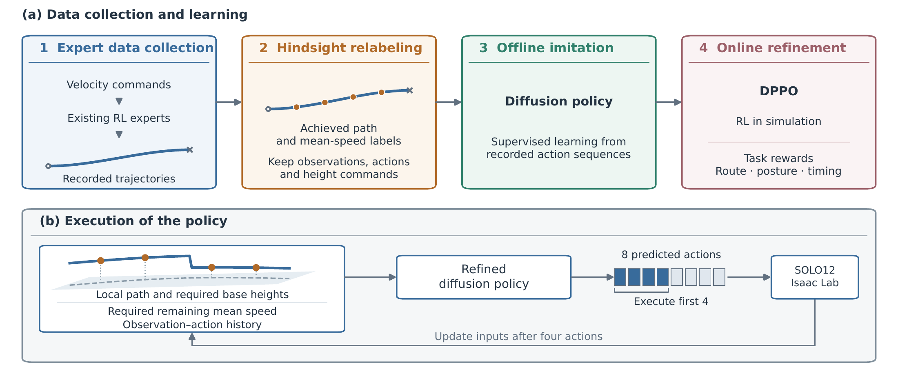

SOLO12 · ISAAC LAB
Path Diff
Diffusion policies for route,
posture and timing control.
Reuse walking and crouching demonstrations to follow new routes, change height where needed and work towards a requested completion time—without a gait command or a prescribed local speed profile.
Compare the same task
Choose a route and request, then compare the controllers side by side. Examples use training seed 42; the results retain all available seeds.
Recorded evaluation metrics appear below each method. New video captures must carry their own metrics and provenance; they are not reconstructed from these logs.
Inspect the original recorded trajectories
Base-position replay, not robot-motion video. Shared spatial scale and simulated-time cursor.
From expert motion to a new task interface
We relabel 2 s windows from velocity-conditioned experts with the path followed and mean speed achieved, retaining observations, actions and height commands for supervised imitation. DPPO then refines the policy using online rewards for route, posture and timing.

Reusing data. The direct policy produces joint-action chunks, replanning at 12.5 Hz with joint targets applied at 50 Hz.
Reusing experts. The hierarchy selects a frozen expert and velocity command at 5 Hz. The expert computes joint actions at 50 Hz.
What the comparison shows
The hierarchy is a strong baseline on ordinary routes. With repeated posture changes, relative performance depends on the starting posture. No method leads on every measure.
Task success combines arrival, terminal pose, posture and average-speed checks. Adherence also requires active cross-track RMSE ≤10 cm. Survival covers 24 s. Arrival-speed error excludes episodes that did not arrive; its denominator is shown.
Initialization and comparability
Gaussian BC and random-weight actors share the refinement recipe and demonstration-derived normalization. Their comparison tests initialization under that recipe, not whether all reinforcement learning from scratch fails. Hierarchy and direct policies differ in observations, interfaces, frequencies and checkpoint selection. Only one diffusion seed is available in this bank.
Scope and limitations
These are simulation results on development route banks, not physical-robot validation. Fast crouch and repeated posture changes remain difficult. Task completion does not establish retention of every demonstrated gait. The paired bank contains 14 core geometries and a separate 14-geometry composition bank; crossed requests are not independent training replications.
Remaining-time speed is a designed feedback signal. The policy learns how to respond to it; we do not claim an optimal timing planner or that diffusion is necessary for every task.